현장에서 측정한 것만 기록합니다.
데모용 이론이 아니라, 2i가 실제 제조·유통 현장에서 돌려보고 확인한 방법과, 그 판단의 근거가 된 논문을 게시판으로 남깁니다.
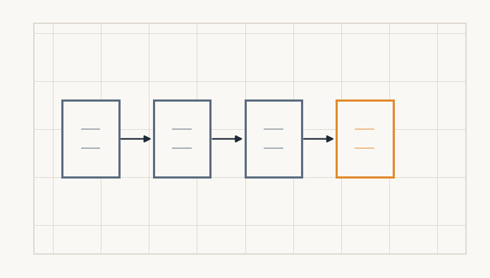
의미는 맞는데 갈 수 없는 가게: 시맨틱 ID에 위치를 넣지 않으면 생기는 일
요즘 추천 모델은 상품을 짧은 코드로 압축합니다. 그 코드를 내용만으로 만들면 서울 치킨집과 부산 치킨집이 같은 코드로 묶입니다. 합성 POI로 같은 조건에서 재보니 같은 코드를 공유한 쌍의 81.7퍼센트가 40킬로미터 넘게 떨어져 있었고, 마지막 코드 층만 위치 기반으로 바꾸자 30.1퍼센트로 내려갔습니다. 두 방식의 코드 개수는 같게 고정했습니다.
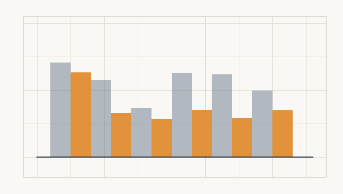
추천을 바꾸기 전에 인기순부터 이겨야 합니다: 대조군을 넣었더니 격차가 3분의 1로 줄었습니다
공개 벤치마크 한 벌을 인기순 대조군, 투타워, 생성형 세 갈래로 같은 예산에 돌렸습니다. 두 학습 모델은 대조군을 넘었지만, 2에포크에서 102퍼센트로 보이던 격차가 수렴한 10에포크에서는 33퍼센트였습니다. 그리고 합성 데이터로 쏠림을 훑어 보니 개인화의 이득은 단조롭게 줄지 않고, 중간 구간에서는 인기순이 오히려 앞섰습니다.
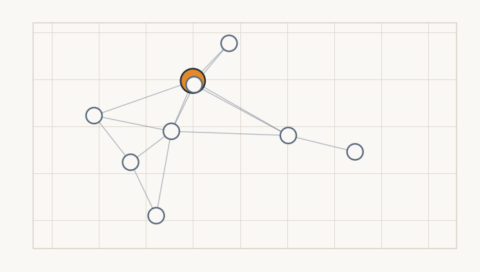
의사결정 OS에서 가장 비어 있는 칸: 검증과 설명 - 5개 도메인 실측
최적화 도입을 검토하는 기술 리더를 위한 글입니다. solve 자체는 이미 상품화됐지만 '이 답을 믿어도 되는가'와 '왜 안 풀리는가'는 시장 전체에서 여전히 비어 있고, 그 공백이 도입 실패의 큰 몫을 차지합니다. 방배정 1,200명 규모에서 단일 solve는 위반 건수가 시드별로 99/130/0으로 요동쳤지만 블록 분해로 0/8/0까지 안정화됐고, 배달 디스패치 권역 규모에서는 exact가 그리디 대비 미배정 22%, 이동거리 37% 감소를 냈습니다. 반대로 배달 과부하 규모에서는 exact 4개 변형 전부가 그리디의 처리량을 못 이겼다는 사실도 그대로 공개합니다.
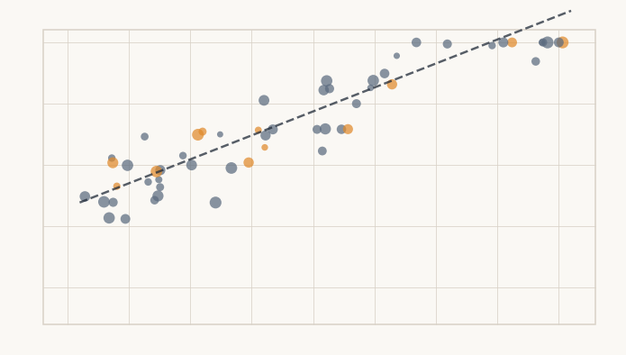
테스트가 전부 초록인데 1분 만에 죽었다: 단일 축 검증이 원리적으로 못 보는 결함 4종
저장 시스템이나 API 서버를 검증하는 사람을 위한 글입니다. 저희는 40항목 체크리스트, S3 표준 스위트 205건, 자체 테스트 전부가 통과하는 상태에서 프로덕션 클라이언트를 붙였고 게이트웨이가 1분 만에 죽었습니다. 이어서 사흘이 아니라 몇 시간 안에 결함 4건이 더 나왔습니다. 네 건 모두 통과율을 아무리 올려도 나오지 않는 종류였고, 공통점은 '기능 조합'과 '다른 클라이언트'라는 두 축이었습니다. 어떤 검증이 어떤 결함을 원리적으로 못 보는지, 그리고 저희가 검증 방식을 어떻게 바꿨는지 실측과 함께 정리합니다.
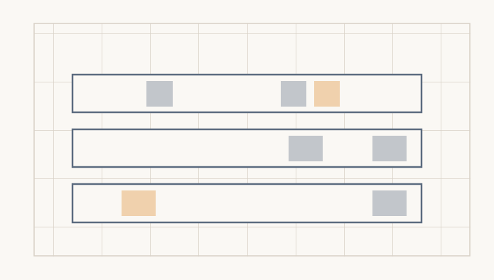
졌다고 쓴 다음에 한 일: 점수를 두 배로 올린 뒤, 커버리지를 넓혀 다시 내렸습니다
자기진단에서 지고 그대로 공개한 뒤 이틀 만에 두 단계로 고쳤습니다. 먼저 하네스를 고정한 채 저장소만 고쳐 41.7점을 85.7점으로 만들고, 그다음 하네스의 탐색 결함을 일반화해 커버리지를 28.2퍼센트로 넓혔더니 점수가 77.3으로 내려갔습니다. 내려간 것이 정상입니다. 그리고 하네스를 고친 뒤 상대를 다시 쟀더니 72.7점 그대로였습니다.
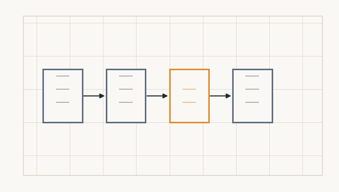
언제나 해가 있는 편성 시스템을 만드는 법: 하드 등식에서 슬랙 재설계로
교대 근무표를 짜다 '오늘은 안 풀린다'는 메시지를 받아본 적이 있다면 이 글이 그 원인과 해법을 다룹니다. 3년 전 근무 스케줄링 코드는 합성 인스턴스 18개 중 12개(66.7%)에서 해를 내지 못했고, 그중 14일짜리 9개는 수요와 무관한 구조적 결함이었습니다. 원본이 못 푼 인스턴스에서 뽑은 대표 4개를 CP-SAT 슬랙 기반 모델로 다시 풀면 4개 전부 OPTIMAL이 나오고 위반 0으로 검증됩니다. 공정성 강화는 대체로 공짜였고, 공개 간호사 로스터링 벤치마크에서는 하드 위반이 1,102건에서 0건으로 줄었습니다.
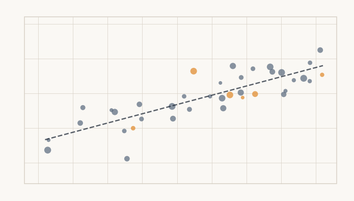
최적화를 켜면 무엇이 얼마나 좋아지는가: 4개 도메인 실측
최적화 도입을 검토하지만 '그래서 얼마나 좋아지는데'라는 질문에 숫자로 답을 들어본 적이 없는 의사결정자를 위한 글입니다. 같은 모델·같은 제약·같은 솔버에서 목적 가중치만 0으로 끈 해와 비교했더니, 방배정은 선호 충족률이 2~12%에서 60~69%로(+53~61%p), 콜센터는 같은 인건비에서 서비스레벨이 +4.97%p, 야구 일정은 홈/원정 연속배정이 36~100% 줄었습니다. 대가로 무엇을 내주는지도 함께 실측했습니다.
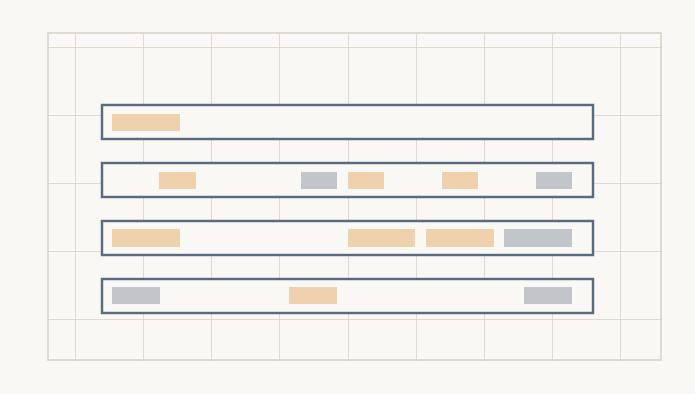
진단 보고서는 점수보다 커버리지를 먼저 써야 합니다: 39항목 중 11개를 잰 기록
실제 배포를 39항목으로 진단해 11개를 측정했습니다. 측정 범위 28.2퍼센트. 점수 72.7점보다 이 숫자가 먼저 나와야 합니다. 나머지 27개는 통과로 가는 코드 경로 자체를 없앴습니다.
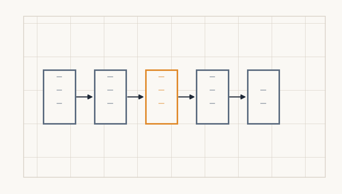
복제 3벌은 내구성이 아닙니다: 정족수·체크섬·스크럽 실측
체크섬을 끄면 비트로트 탐지율이 0퍼센트가 되고, 조용한 오염이 100퍼센트 남습니다. 배경 검증을 끄면 여섯 라운드 만에 객체의 13.3퍼센트를 잃었습니다. 복제본을 세 벌 두는 것과 그 세 벌이 온전한지 아는 것은 다른 문제입니다.
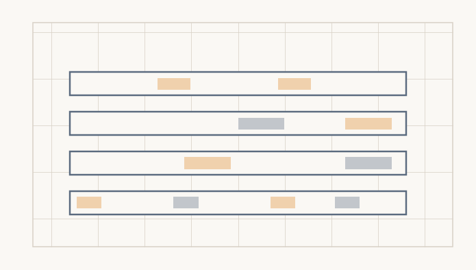
우리 진단 도구를 우리 저장소에 겨눴더니 MinIO보다 나빴습니다
측정 범위 15.4퍼센트, 점수 41.7점. MinIO는 28.2퍼센트에 72.7점이었습니다. 더 아픈 것은 그 낮은 커버리지의 주된 원인이 우리 하네스의 결함이었다는 사실입니다. 우리는 둘 다 고치지 않았습니다.
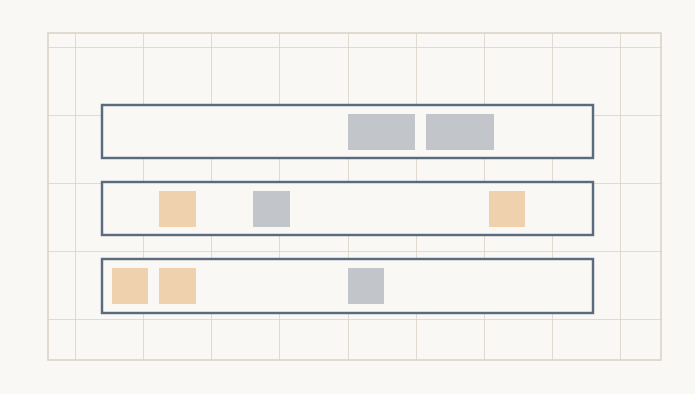
아카이브로 내리면 싸진다는 말이 틀리는 조건, 그리고 온프렘이 뒤집히는 단가
작은 파일을 짧게 보관하는 워크로드에 공격적 아카이브 전환을 걸었더니 아무것도 안 한 것보다 4배 비쌌습니다. 온프렘 이전 권고는 원시 TB당 83.7달러에서 클라우드로 뒤집혔습니다. 결론이 아니라 손익분기를 계산해야 하는 이유입니다.
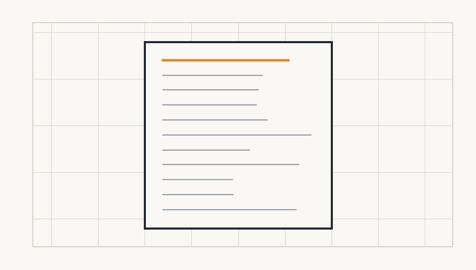
측정 가능한 신호·AI 지능 (백서 v5)
오디오 콘텐츠ID, WiFi-CSI 센싱, RF 지문 인증, 설비 예지보전, 엣지 배치·양자화, 대규모 에이전트 검색, 금융 백테스트 규율까지 34편의 실험 노트를 하나의 측정 규율로 묶은 2i의 플래그십 백서 v5입니다. 세 편이 서로 다른 분야에서 독립적으로 같은 결론에 도달했습니다. 같은 모델·같은 데이터인데 평가 프로토콜만 바꾸면 정확도가 0.931에서 0.088로 갈립니다.
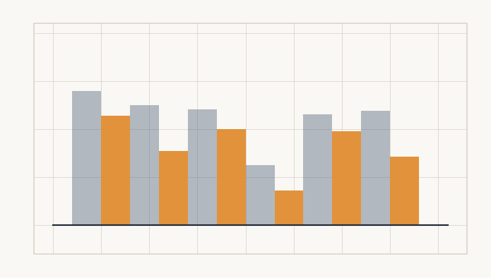
고전 DSP+GBM 대 딥러닝: 신호 과제 결정 지도
변조분류·간섭탐지·드론오픈셋·채널추정·RF지문·신호분리 6개 과제를 같은 데이터·같은 지표로 공정 비교했습니다. 딥러닝이 전부를 이기지 않았고, 고전이 전부를 이기지도 않았습니다. 어디서 무엇이 이기는지를 숫자와 한계까지 공개합니다.
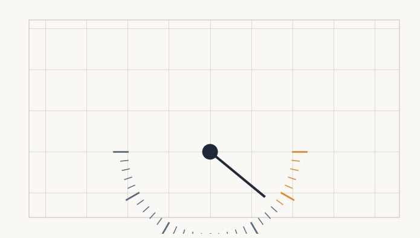
고정 오탐률 산업 이상·간섭 탐지
산업 무선 모니터링의 진짜 계약은 탐지율이 아니라 오탐 예산입니다. CFAR 탐지기가 목표 오탐률을 실제로 지키는지, 간섭 유형분류와 위치추정은 어디까지 되는지를 합성 데이터로 실측하고 한계까지 공개합니다.
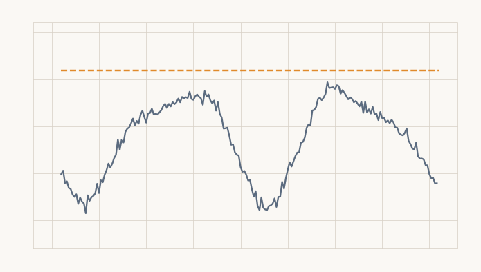
오픈셋 RF 지문 검증: 분리성은 실재하나 하드 인증 동작점은 아직 멀다
공개 데이터 세 종(WiSig, INRIA, WIDEFT)으로 실측한 오픈셋 RF 지문 검증. AUROC 0.87까지 분리는 되지만, 접근제어가 실제로 요구하는 낮은 오탐률 지점(TAR@FAR)에서는 2~3%로 붕괴합니다. 라이선스가 다른 두 데이터셋에서 같은 격차가 재현된, 정직한 경계 연구입니다.
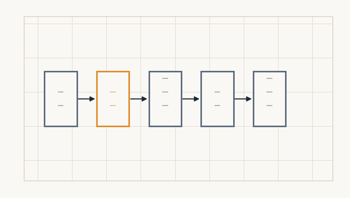
분할 프로토콜이 만드는 성능 착시: 같은 모델이 93%이면서 9%다
공개 WiFi 센싱 데이터로, 데이터와 모델을 고정한 채 분할 방식만 바꿔 실측했습니다. 정확도가 0.931에서 0.088(우연 수준 0.0625)까지 벌어집니다. 흔히 지적되는 인접 프레임 누수는 2~6%p에 불과했고 도메인 이동이 78~82%p였습니다. 무카메라 센싱 도입 타당성을 정확도가 아니라 도메인 이전 성능으로 판정해야 하는 이유, 그리고 라벨 몇 개면 회복되는지까지 공개합니다.
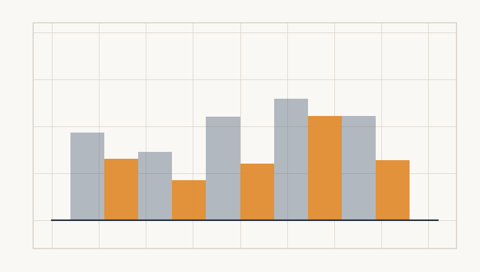
신호 특징 위에서 테이블러 부스팅이 딥러닝을 이기는 조건
GBM·TabPFN·딥러닝을 같은 물리 특징, 같은 분할 위에서 붙였습니다. 539개 학습 표본에서 LightGBM 0.855 대 원시 IQ 딥러닝 0.681. 표본을 2,000개로 늘리면 격차는 36.0%p에서 21.3%p로 좁혀지지만, 교차점이 실제로 존재하는지는 이 실험 범위에서 확인하지 못했습니다.
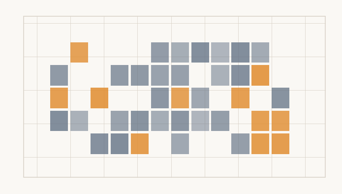
오디오 콘텐츠ID, 8천곡 규모로 키워도 정확도가 안 무너졌습니다 - 대신 메모리가 무너지는 지점을 찾았습니다
방송 저작권 모니터링에 쓰이는 피크쌍 해싱 음원식별을 999곡에서 7,996곡까지 실측으로 키웠습니다. 정확도는 99%대를 유지했지만, 인메모리 인덱스를 100만곡으로 외삽하면 약 868GB - 진짜 병목은 알고리즘이 아니라 인덱스 구조였습니다.
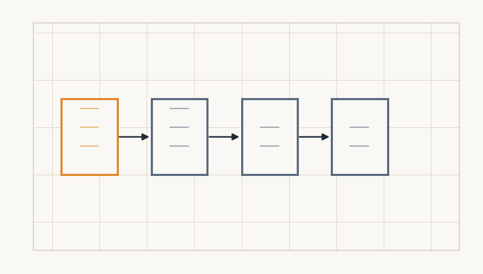
백테스트 규율: 성과를 부풀리는 세 가지 함정
룩어헤드 편향, 생존편향, 다중검정을 합성 시계열 위에서 각각 통제 실험으로 분리해 실측했습니다. 21배까지 벌어지는 착시부터 시도 횟수를 세지 않은 유의성 검정의 오판까지, 백테스트 성과가 부풀려지는 구조를 숫자로 보여줍니다.
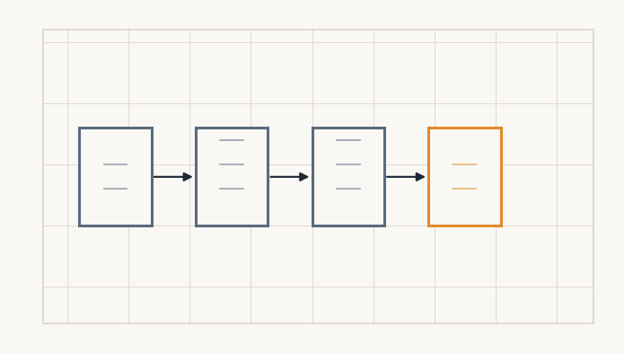
신호 판단의 캘리브레이션된 리스크-스코어: 하드 임계 대신 신뢰할 수 있는 확률로
오픈셋 RF 인증이 하드 게이트로는 NO-GO였던 뒤, 정직한 형태는 리스크-스코어 융합입니다. DroneRF(CC BY 4.0) 실측으로 확인한 것은 원시 확률의 기대보정오차(ECE)가 0.045 수준이었고, Platt·온도·isotonic 보정이 이를 절반 가까이 줄이면서도 판별력(AUROC)은 그대로 보존했다는 사실입니다.
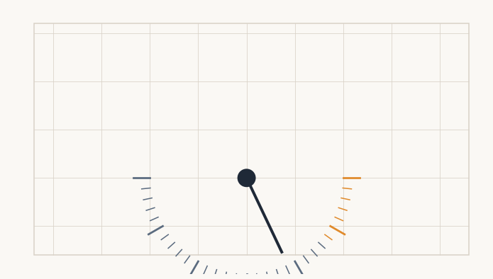
고전 특징 기반 설비 예측정비: 진동은 실측, 음향은 합성으로 검증했습니다
회전설비 결함 진단을 딥러닝 없이 물리 기반 고전 특징 + GBM으로 실측. 진동(CWRU 공개 데이터)은 저SNR에서 정확도 63.6% vs 베이스라인 18.6%, 음향은 합성 데이터로 같은 패턴을 재현하되 실측 검증(MIMII)이 남았음을 명시합니다.
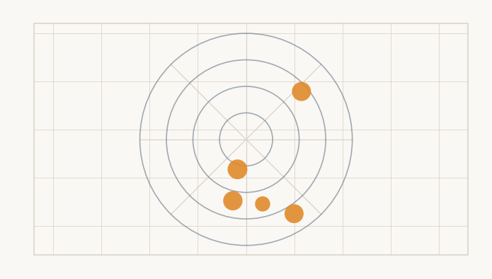
장비 없는 WiFi-CSI 재실·낙상 감지: 실측 공개 데이터 검증
카메라도 웨어러블도 없이, 기존 WiFi 링크의 채널 정보만으로 재실과 낙상을 구분할 수 있는지 두 공개 데이터셋에서 검증했습니다. 7종 활동 분류 95.2%, 낙상 탐지 AUROC 0.990, 재실 판별은 빈 방 대비 걷기 52배 신호 차이로 AUROC 1.000. 방을 옮기면 재보정이 필요하다는 한계까지 그대로 적었습니다.
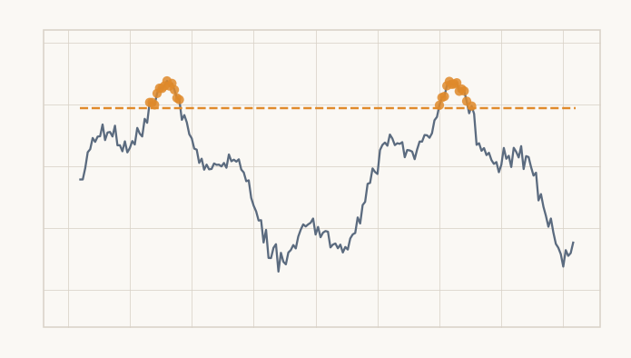
드론 RF 탐지의 오픈셋 현실: 낮은 융합 수에서 고전이 이긴다
공개 데이터셋 DroneRF(CC BY 4.0)로 실측한 드론 오픈셋 거부. 단일 관측(K=1)에서 고전 DSP+GBM의 미지 드론 거부율이 딥러닝 대비 5.7배 높았습니다. 두 방법이 비슷해지는 것은 관측 수십 개를 누적해야 하는 K=20 이상뿐입니다.
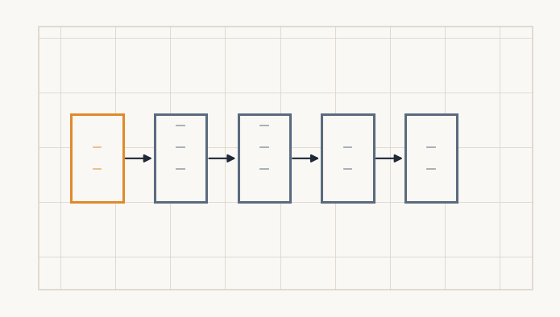
엣지 신호처리 예산 귀속
저가 엣지 코어 하나에서 40 MSPS를 처리하겠다는 약속, 실제로 어느 나노초 예산 위에 서 있을까요. 12단계 고전 RF 수신기 프론트엔드를 스테이지별로 실측해 병목을 귀속시키고, 최적화만으로는 목표에 닿지 못한다는 것을 숫자로 보여드립니다.
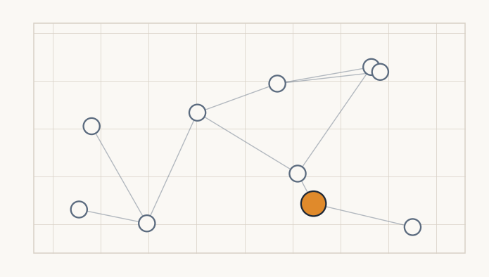
팩터 수익 예측: 부스팅 vs 딥러닝
Fama-French 일간 팩터 데이터로 그래디언트 부스팅과 얕은 신경망을 시간순 분할로 맞세웠습니다. 훈련 60일에서는 신경망 R2가 -2.6까지 무너지고 부스팅은 -0.07로 훨씬 완만했지만, 훈련 데이터가 4천~8천일로 늘면 그 우위가 뒤집힙니다.
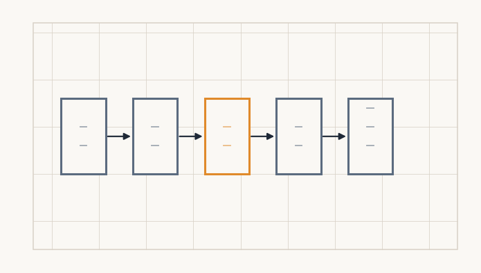
신호 모델 엣지 배치: INT8 QAT 대 PTQ
작은 변조분류 CNN 하나로 INT8 양자화의 두 경로를 실측했습니다. 학습 후 양자화(PTQ)는 정확도를 31%p 무너뜨렸고, 양자화 인식 학습(QAT)은 그 손실의 94.5%를 되찾았습니다. 크기·지연 이득은 두 경로가 동일했습니다.
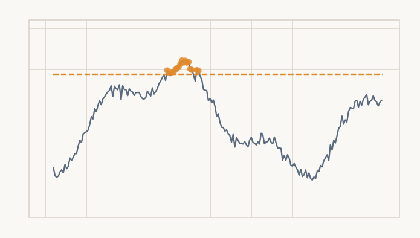
RF 지문은 수신 체인 어디서 살고 죽는가
수신 체인 7개 지점(P0 원시 IQ부터 P7 복조 심볼까지)마다 지문 식별 모델을 독립 훈련해 실측했습니다. 통념과 반대로 지문은 체인 앞단에서 가장 강했고, 동기화 단계를 지날수록 지워져 마지막 지점에서는 검증 성능이 우연 수준(EER 0.499)까지 떨어졌습니다.
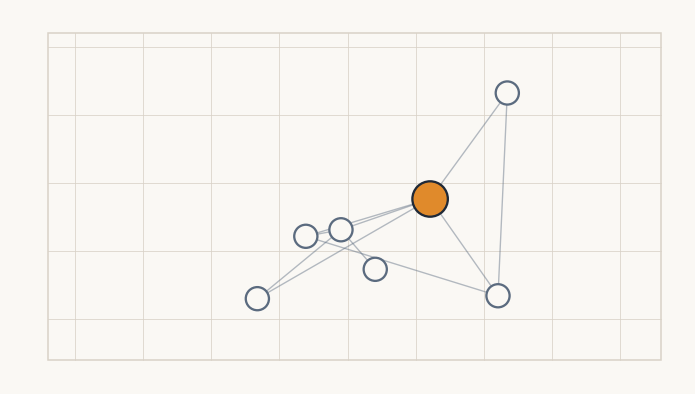
고정 오탐률 레짐 탐지: 시장 국면 경보를 CFAR 규율로
레이더 신호탐지의 CFAR(고정 오탐률) 규율을 시장 국면 경보에 옮겨와 합성 마르코프 전환 실험으로 실측했습니다. 나이브 임계값은 목표 10%에서 4.53%로 빗나갔지만, CFAR 방식은 세 목표 수준 모두에서 0.02퍼센트포인트 안팎의 오차로 정확히 보정됩니다.
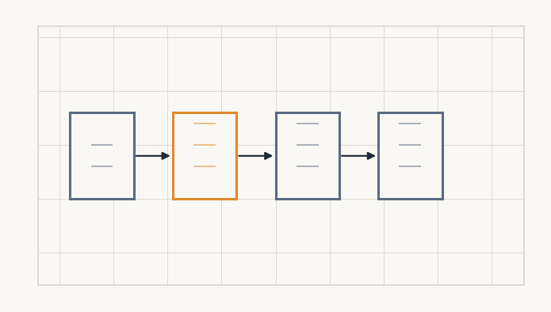
재현 가능한 오픈셋 평가 프로토콜: 왜 closed-set 정확도로 인증을 주장하면 안 되는가
같은 RF 지문 모델이 낙관적 프로토콜에서는 AUROC 0.9994를, 등록 목록에 없는 기기가 임의로 사칭을 시도하는 최악조건·장치분리 프로토콜에서는 TAR@FAR=1e-3 0.2235를 냅니다. 숫자를 믿을 수 있는지는 모델이 아니라 평가 프로토콜이 정한다는 것을 실측으로 보이는 방법론 논문입니다.
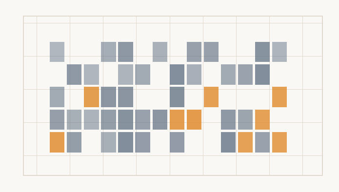
100만곡 규모 오디오 콘텐츠ID를 위한 샤딩 인덱스
오디오 콘텐츠ID 인덱스를 100만곡으로 키우면 인메모리 딕셔너리 하나로는 약 868GB가 필요합니다. 같은 해시 테이블을 해시 키 기준으로 쪼개 정확도를 그대로 지키면서 노드 한 대가 짊어질 메모리를 실측으로 묶어봤습니다.
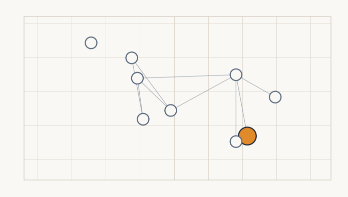
대규모 스킬 코퍼스 라우팅: BM25 대 하이브리드 검색
도구가 1000개를 넘는 에이전트에서 검색 단계가 곧 정확도의 상한선입니다. 완전히 공개된 합성 코퍼스로 BM25, 유사-의미 검색, 하이브리드 RRF를 같은 질의로 실측하고, 하이브리드가 항상 이기지는 않는다는 결과까지 그대로 공개합니다.
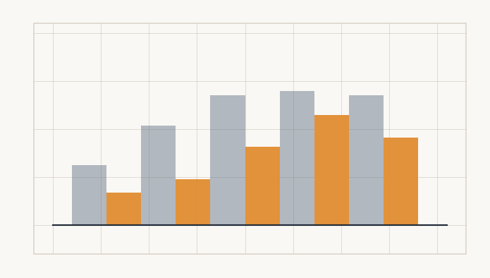
엣지 실리콘에서 스트리밍 VLM 양자화
같은 4비트 정밀도인데 런타임만 바꾸자 디코드 속도가 190배 빨라졌습니다. 4B급 스트리밍 VLM(microsoft/Mage-VL)을 소비자용 Apple 실리콘 Mac에서 실측해, 양자화만으로는 부족하고 융합커널 런타임이 있어야 작고도 빠른 조합이 나온다는 것을 데이터로 닫았습니다.
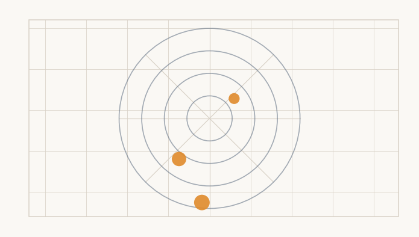
WiFi-CSI 환경 이동과 소량 보정
환경이 바뀌면 WiFi-CSI 센싱 정확도는 실측으로 55%까지 무너졌습니다. 클래스당 50개(약 350개) 목표 도메인 라벨을 더하는 것만으로 그 격차의 80%를 되찾았습니다.
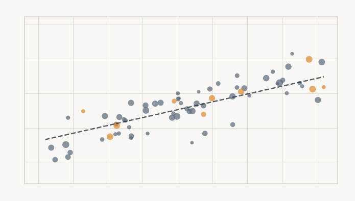
음원 식별 API, 잡음·압축·속도변경에서 얼마나 버티나 실측했습니다
999트랙 카탈로그에서 피크쌍 해싱 음원 식별을 자체벤치로 실측. 클린 95%, 강한 잡음(SNR -5dB)에서도 top-1 72.5%. 방송 모니터링·저작권 감시가 실제로 묻는 조건을 먼저 재봤습니다.
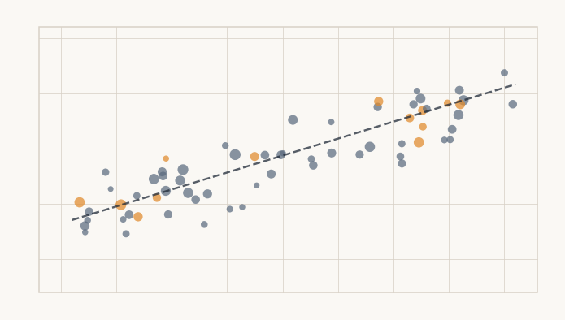
베어링 이상, 소음 속에서 잡기: 물리 특징이 나이브 접근을 33%p 이겼습니다
공개 베어링 진동 데이터(CWRU)에서 예측정비 파이프라인을 실측. 공장 소음 수준(SNR 0dB)에서 엔벨로프 스펙트럼 물리 특징 85.1% vs 나이브 스펙트럼 52.0%. 잡음이 셀수록 물리가 이깁니다.
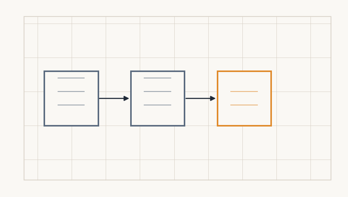
엣지에서 정말 돌아가나: 처리량 예산을 실측으로 귀속하는 법
저가 엣지 보드에서 신호처리 파이프라인 처리량을 단계별로 실측해 초당 7.6M 샘플, 목표 대비 0.19배라는 불편한 숫자와 병목 위치를 공개합니다. 데모가 아니라 배포를 팔려면 이 숫자부터 재야 합니다.
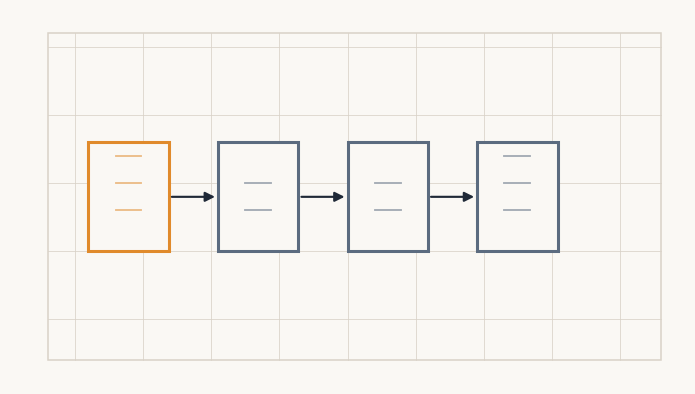
수치를 못 믿게 만드는 다섯 가지 실수, 그리고 우리가 쓰는 방어 장치
사전선언 게이트, 셔플 대조, 오탐률 고정, 누수 차단, 음성 결과 공개. 이 게시판의 모든 실험 노트에 공통으로 걸려 있는 다섯 가지 측정 규율을 한 장으로 정리했습니다. AI 도입 검증에 그대로 가져다 쓰셔도 됩니다.
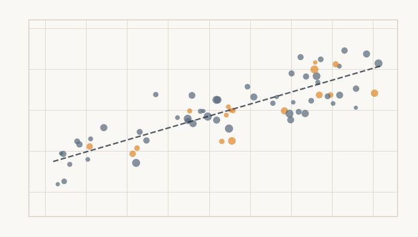
간섭탐지는 '몇 % 잡았다'가 아니라 '오탐 몇 %에서 잡았다'로 말해야 합니다
공장·병원 무선 간섭탐지의 자체벤치: 오탐률을 먼저 고정하고 그 조건에서 검출률 98.0%를 실측. 합성 벤치임을 명시하고, 오탐률 고정이 왜 상용 간섭탐지의 유일하게 정직한 화법인지 정리했습니다.
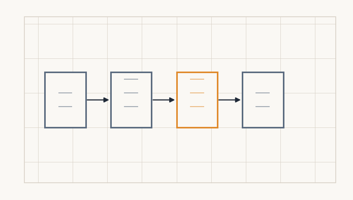
간섭원 위치추정: 센서 몇 개면 몇 미터까지 짚을 수 있나 (시뮬레이션 노트)
60x40m 공장 홀 모델에서 RSS·TDoA 위치추정을 500회 몬테카를로로 실측. 앵커 6개 + 30ns 동기 TDoA면 중앙값 오차 약 7m. 센서 배치가 나쁘면 3배 나빠지고, 협대역 재머는 TDoA가 원리적으로 실패한다는 것까지 확인했습니다.
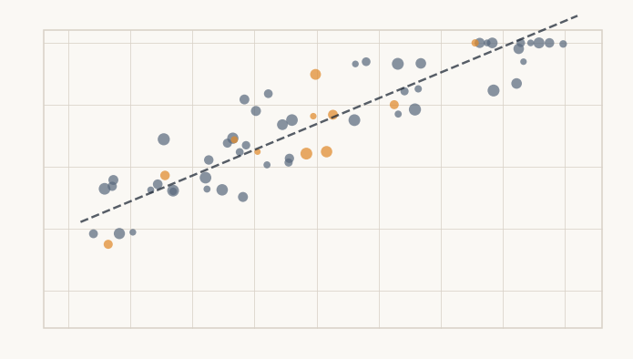
한 번 등록으로 기기 식별: 원샷 등록에서 딥러닝이 고전을 실제로 이긴 지점
등록 샘플이 단 1개뿐인 극한 조건(K=1)의 무선 기기 식별 자체벤치. 임베딩 학습 기반 0.696~0.739 vs 고전 특징 0.549. 저희가 딥러닝을 파는 유일한 기준인 '고전을 실측으로 이겼을 때'를 통과한 사례입니다.
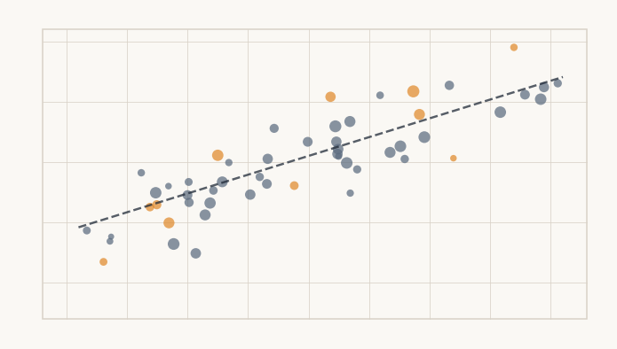
모르는 신호를 '모른다'고 말하는 기계: 복잡한 방법이 항상 이기지 않았습니다
미지 신호원 거부(open-set) 실측 A/B. 극값이론 기반 고급 보정이 실측 무선 데이터에서 단순 거리 기반을 이기지 못했습니다. 병목은 점수 계산이 아니라 특징 공간이라는 결론과, 그걸 알아낸 실험 설계를 공개합니다.

레이더 신호 탐지, 트래픽이 섞이면 무너지는가: 오탐률 고정 판정법
규격 레이더 파형 36종 테스트 매트릭스에서 무트래픽 36/36 통과, WiFi 트래픽 혼재 시 27/36으로 하락하는 것을 오탐률 고정 조건에서 실측. 실패 9건의 원인 귀속과 처방 검증 설계까지, 판정 기준을 사전에 못박는 방법론을 공개합니다.
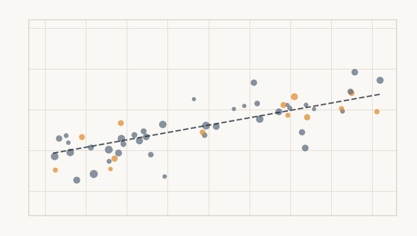
공장 무선망의 미등록 기기, RF 지문으로 얼마나 잡히나: 정직한 갭 리포트
150대 실측 송신기 데이터(WiSig)로 '등록 기기 N대 + 미등록 침입 기기' 시나리오를 실측. 같은 수신기 조건 AUROC 0.80은 진짜 신호지만, 오탐 1% 조건 검출률 22%는 판매 기준에 못 미칩니다. 어디까지 되고 어디부터 안 되는지를 그대로 공개합니다.
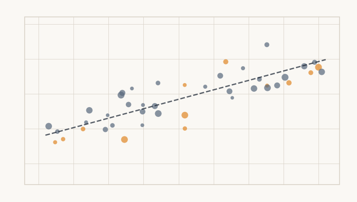
카메라·센서 추가 없이, 기존 WiFi로 재실·움직임 감지: 실측 노트
공개 실측 WiFi 채널데이터(OPERAnet, 퍼블릭 도메인)로 재실·모션 감지 체인을 검증. 빈 방 대비 걷기 52배, 앉기·서기 13배의 모션 신호, 10초 윈도우 분리도 AUROC 1.000. 단일 방 결과라는 한계까지 그대로 적었습니다.
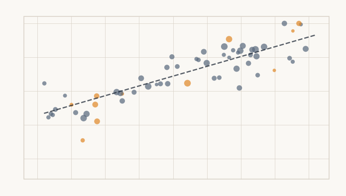
이상탐지, 우리는 규칙 기반으로 먼저 갑니다
제조 현장의 불량·설비 이상을 잡을 때 딥러닝부터 꺼내지 않는 이유. 측정 게이트에서 규칙 기반이 먼저 통과해야 하는 근거를 실험 노트로 정리했습니다.
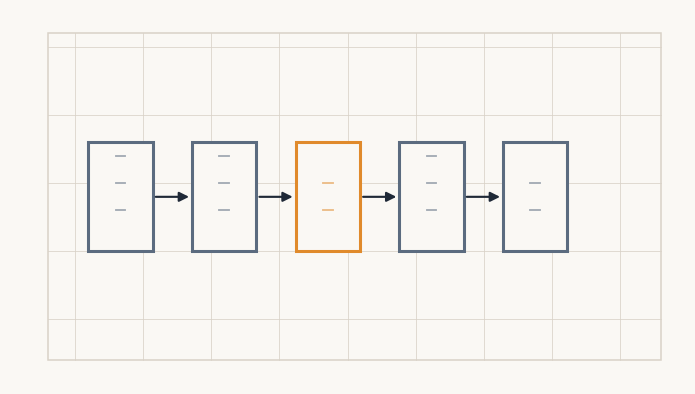
AX를 감이 아니라 공정으로: 2i 게이지 방식
AI 전환이 실패하는 가장 흔한 이유는 기술이 아니라 순서입니다. 측정 게이트, 실증 게이트, 이관 게이트로 위험을 단계마다 끊어내는 2i의 작업 방식을 정리합니다.